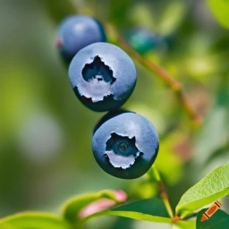

It’s the 20th anniversary of Blueberry Hill, a local blueberry farm where
you work. You
walk over to the farm's
shed to turn on your farm's drip irrigation system, just like you had been doing all spring. “It’s just
another boring day on the farm,” you mutter to yourself as you set a timer to remind yourself to turn
off the water. You hear someone step inside the shed. “Good to see you turned on the irrigation system! This
has been a particularly dry spring.” It was your co-worker Dave. You talk with Dave for a while before
you decide to check on the crops.
Dave walks over to a blueberry plant and has a puzzled look on his face.
“I could have sworn we watered these plenty through our irrigation line. Why do they look so wilted and
brown?” Perplexed, you take a look at the crops yourself, but something doesn’t seem right. If your
crops have enough water, why do they look so dehydrated and wilted? As you take a closer look at one of the
plants, you notice tiny green and white specs infesting the underside of leaves and clinging onto the plant's
stem. You pull out a magnifying glass and see tiny green aphids covering your plants.
Aphids are a type of soft-bodied insect that tap into the vascular systems of plants and suck out nutrients and sap. Due to the drought experienced by the farm, little rainfall had occurred resulting in a decrease in ladybug and lacewing populations in the surrounding fields, which are natural predators of aphids. Additionally, the farm used drip irrigation, which provides water to the root of plants instead of coating and soaking the plants leaves. Due to the soft and tiny nature of aphids, they are easily swept away and kept under control by rainfall, which the farm lacked from the drought.
Aphids are relatively common in most gardens and farms, but are in manageable levels due to rain, predators, and plants' natural defense systems, such as chemical agents in the plants' sap. Despite aphids having a one month lifespan, they reproduce incredibly quickly and reach reproducing age only around four to ten days after being born, meaning they can quickly overtake a garden or farm if left unchecked. Factors such as drought, low predator populations, and weeds, which can provide a stepping stone for aphids infesting a garden, can lead to the creation of optimal reproducing conditions for aphids resulting in potential aphid outbreaks.
Enter Text Below To Change The HTML Of This Element!-